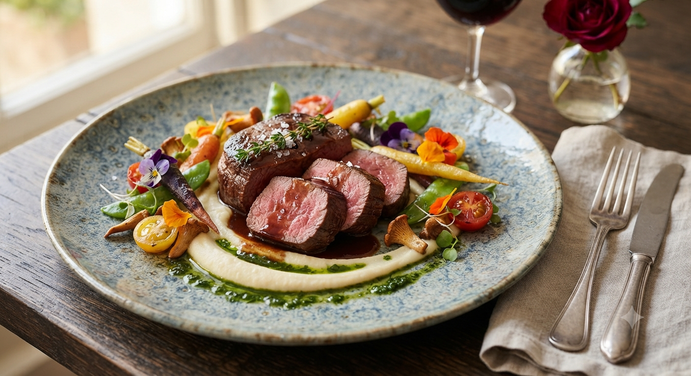
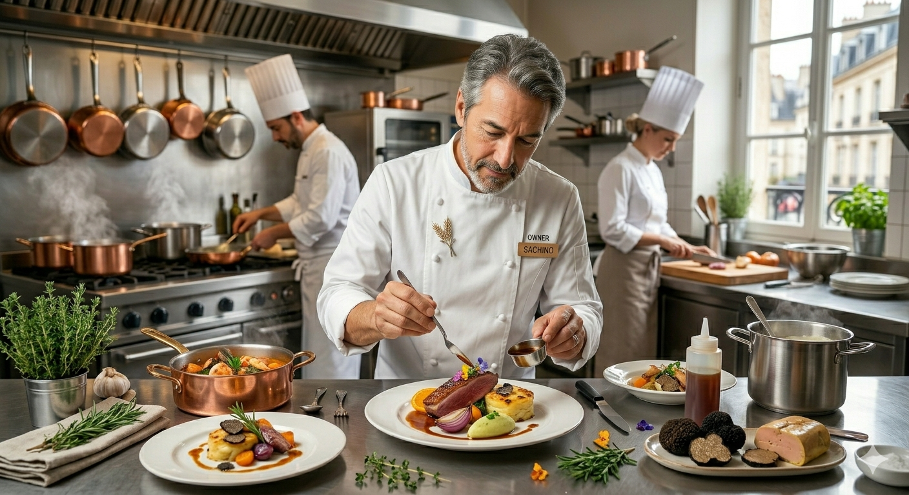

CONCEPT
マグロとさくらんぼ、ローストビーフに西洋ワサビのアイス。
庄内地方を中心とした地元の旬を、古典的な技法と現代のビジュアルで再現。
遊び心とオリジナリティが、一皿をアートへと昇華させます。
RESERVATION

34歳、情熱ひとつで掴み出した料理人の道。脱サラして庄内へUターンし、名店「ロアジス」での5年間の修行。
フランス語で「収穫・実り」を意味する「レコルト」。その名の通り、山形や北陸の豊かな食材を丁寧に集め、皆様に最高の形でお届けしたい。
カフェのように温かく、しかし料理はどこまでも妥協なく。肩肘張らずに愉しめる、本物の味をご堪能ください。
FUTURE SERVICES
レコルトでは、皆様の日常により添う新たな「実り」をお届けするため、
以下の新しいサービス・企画を準備しております。
ランチとディナーの間のひとときに。季節のフルーツを贅沢に使った盛り合わせデセールと、ソムリエ厳選ペアリングドリンクを愉しむ限定カフェタイム。
評判のパスタソースや山形食材のビストロデリをご家庭で。記念日用オードブルやギフトボックスの全国発送も準備中です。
※開始時期や詳細は公式Instagramおよびホームページにて順次発表いたします。
〒997-0047 山形県鶴岡市大塚町21-2
※住宅街に位置するため、お車でお越しの際は道にご注意ください。